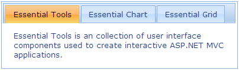

Refer to the Getting Started section for prerequisites needed to add a tab control to an ASP.NET MVC application.
Using Builder
The following steps explain how to add a tab control through the builder.
1. In View, create the contents for the tab with ul and li (for headers) and div tags (for content) and invoke the tab helper with the control ID as a first argument, followed by the TargetControlId method with the ID of the tab content as an argument.
|
View[ASPX] <div id="tabContents" style="visibility: hidden"> <ul> <li><a href="#tools">Essential Tools</a></li> <li><a href="#chart">Essential Chart</a></li> <li><a href="#grid">Essential Grid</a></li> </ul> <div id="tools"> Essential Tools is a collection of user interface components used to create interactive ASP.NET MVC applications. </div> <div id="chart"> Essential Chart is a business-oriented charting component. Essential Chart features an advanced styles architecture that makes complex multi-level formatting very easy. </div> <div id="grid"> Essential MVC Grid offers a full-featured grid control with extensive support for grouping and displaying hierarchical data. </div> </div> <%=Html.Syncfusion().Tab("myTab") .TargetControlId("tabContents") %>
|
|
View[cshtml] <div id="tabContents" style="visibility: hidden"> <ul> <li><a href="#tools">Essential Tools</a></li> <li><a href="#chart">Essential Chart</a></li> <li><a href="#grid">Essential Grid</a></li> </ul> <div id="tools"> Essential Tools is a collection of user interface components used to create interactive ASP.NET MVC applications. </div> <div id="chart"> Essential Chart is a business-oriented charting component. Essential Chart features an advanced styles architecture that makes complex multi-level formatting very easy. </div> <div id="grid"> Essential MVC Grid offers a full-featured grid control with extensive support for grouping and displaying hierarchical data. </div> </div> @{ Html.Syncfusion().Tab("myTab") .TargetControlId("tabContents").Render(); }
|
 Note: The style attribute visibility of tab
content is set to hidden for better rendering when loading. The visibility will
be reset internally once the resources related to the control are loaded
completely.
Note: The style attribute visibility of tab
content is set to hidden for better rendering when loading. The visibility will
be reset internally once the resources related to the control are loaded
completely.
2. Build and run the application.
Using Properties Model
The following steps explain how to add a tab control through the properties Model.
1. In the controller, create an instance of TabModel.
2. Define the TargetControlId property and pass the instance through the view-specific data to the view.
|
[Controller] public ActionResult Index() { //Create an instance of TabModel. TabModel myModel = new TabModel(); myModel.TargetControlId = "tabContents";
//Pass the instance through the view data to the view. ViewData["myTab"] = myModel; return View(); }
|
3. In View, create the contents of the tab with ul and li (for headers) and div tags (for content) and invoke the tab helper with the view data key as the control ID.
|
View[ASPX] <div id="tabContents" style="visibility: hidden"> <ul> <li><a href="#tools">Essential Tools</a></li> <li><a href="#chart">Essential Chart</a></li> <li><a href="#grid">Essential Grid</a></li> </ul> <div id="tools"> Essential Tools is a collection of user-interface components used to create interactive ASP.NET MVC applications. </div> <div id="chart"> Essential Chart is a business-oriented charting component. Essential Chart features an advanced styles architecture that makes complex multi-level formatting very easy. </div> <div id="grid"> Essential MVC Grid offers a full-featured Grid control with extensive support for grouping and displaying hierarchical data. </div> </div>
<%=Html.Syncfusion().Tab("myTab")%> |
|
View[cshtml] <div id="tabContents" style="visibility: hidden"> <ul> <li><a href="#tools">Essential Tools</a></li> <li><a href="#chart">Essential Chart</a></li> <li><a href="#grid">Essential Grid</a></li> </ul> <div id="tools"> Essential Tools is a collection of user-interface components used to create interactive ASP.NET MVC applications. </div> <div id="chart"> Essential Chart is a business-oriented charting component. Essential Chart features an advanced styles architecture that makes complex multi-level formatting very easy. </div> <div id="grid"> Essential MVC Grid offers a full-featured Grid control with extensive support for grouping and displaying hierarchical data. </div> </div> @{ Html.Syncfusion().Tab("myTab").Render();}
|
4. Build and run the application.
The following figure shows the output of the tab control.

Figure 264: Tab Control
A sample demonstrating a basic tab control can be downloaded from the following link:
Note: The version number for the assemblies has
been set to 8.3.0.20 in the Web.config file of the sample. Please change the
version number to the appropriate version in the Web-2008.config or
Web-2010.config files (available in the root directory) and they will
automatically update the Web.config file.